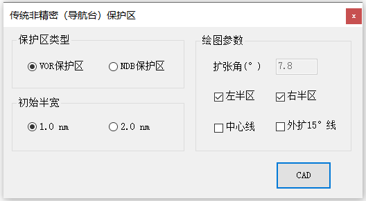

功能简介
【非精密进近保护区】用于绘制基于地面导航台（NDB / VOR）的传统非精密进近保护区。可选择绘制左 / 右半区、中心线与外扩 15° 线，并设置初始半宽与绘图参数。
界面预览

界面元素
| 分区 / 控件 | 说明 |
|---|---|
| 保护区类型 | 选择导航台类型：VOR 保护区 / NDB 保护区。 |
| 初始半宽 | 保护区起始段的半宽：1.0 nm / 2.0 nm。 |
| 绘图参数 · 扩张角(°) | 保护区外扩的扩张角等绘图参数。 |
| 左半区 / 右半区（复选框） | 选择绘制哪一侧半区。 |
| 中心线 / 外扩15°线（复选框） | 是否绘制中心线与外扩 15° 边界线。 |
| CAD（按钮） | 把保护区绘制到CAD窗口中。 |
操作步骤
- 命令行输入
Y04_导航设备保护区打开窗口。 - 在“保护区类型”中选择 VOR / NDB。
- 设置“初始半宽”与“绘图参数（扩张角）”。
- 勾选左 / 右半区、中心线、外扩 15° 线等需要绘制的内容。
- 点击【CAD】，按提示拾取绘制保护区。
提示：绘制单侧半区时，通常与外扩15°线配合使用，可用于转弯后飞向导航台时的保护区绘制。